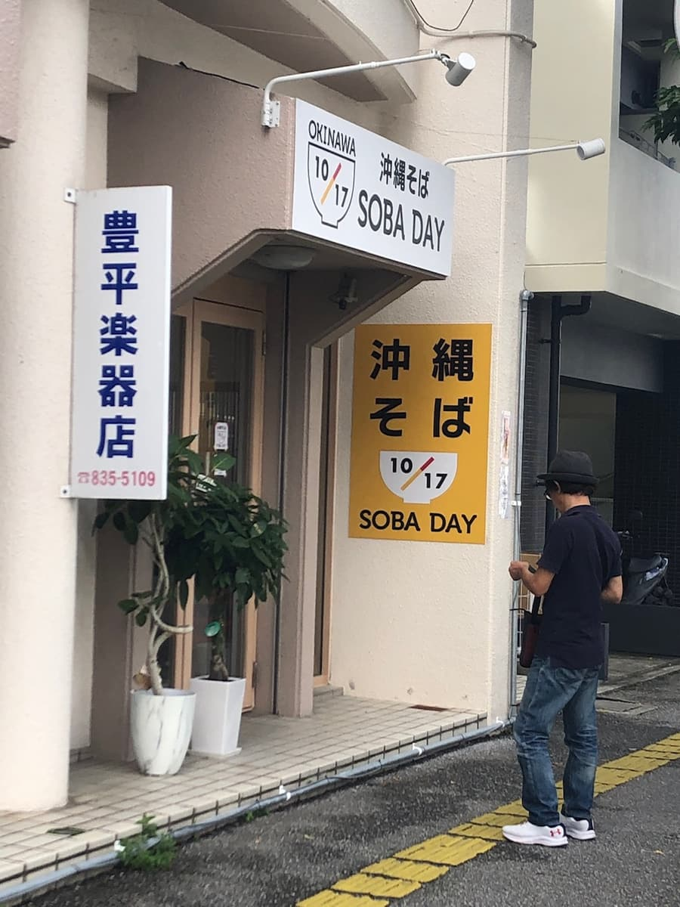
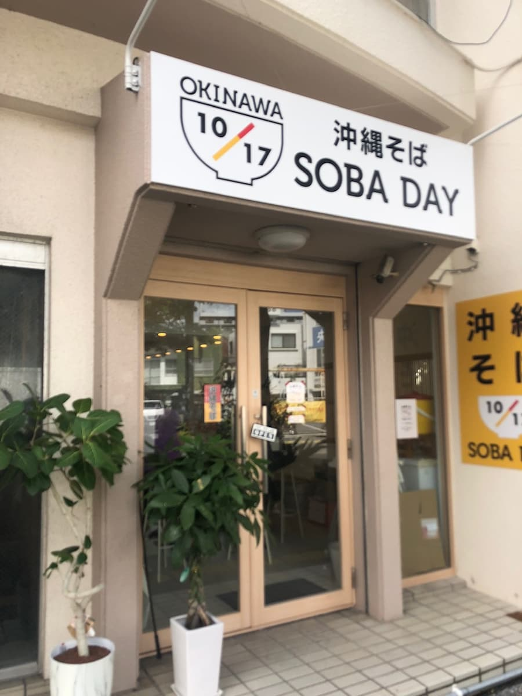
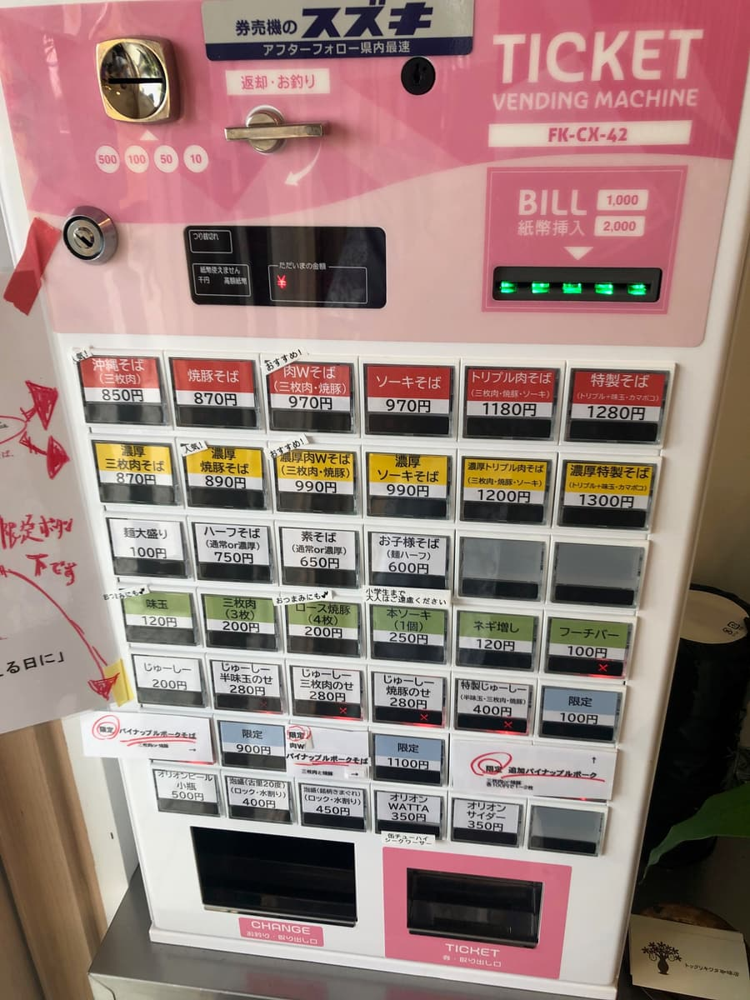
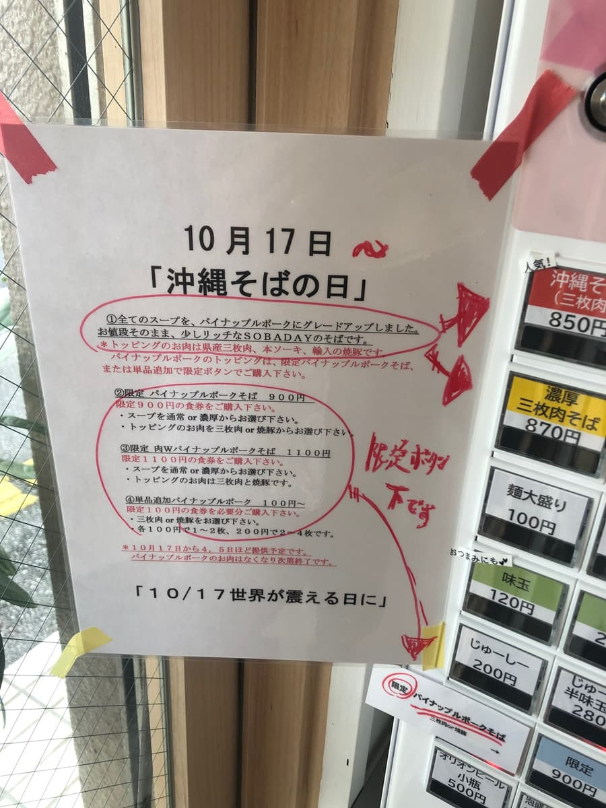
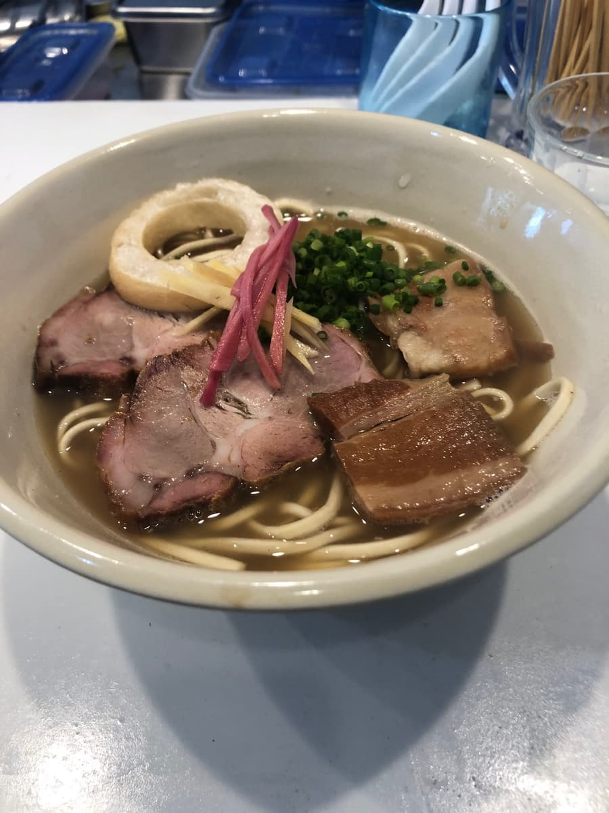
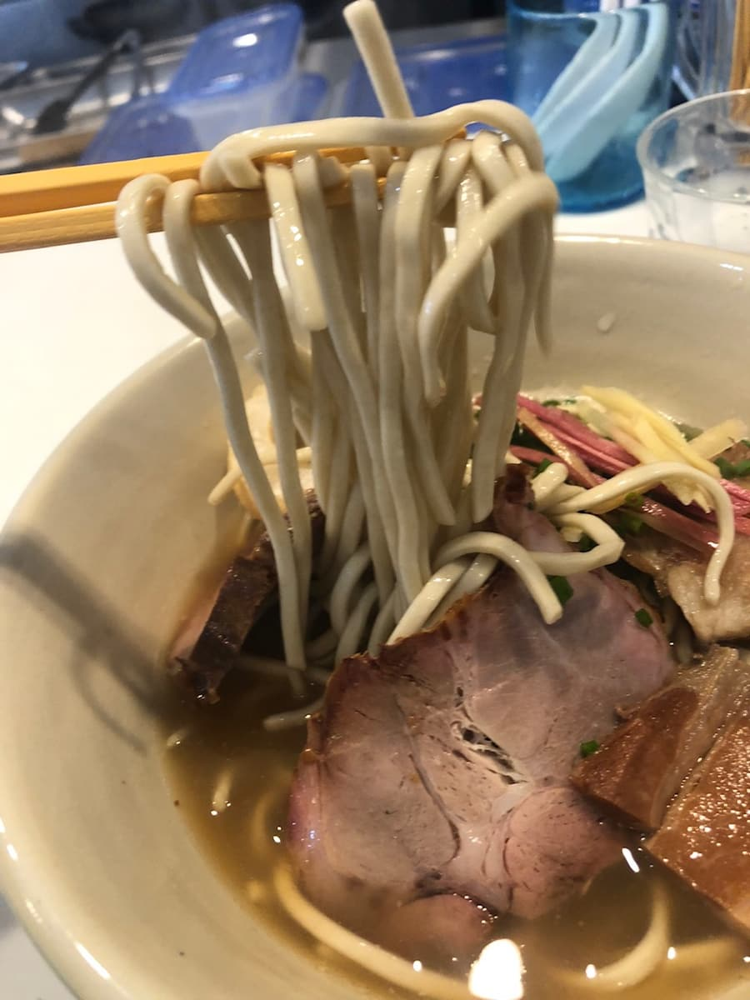
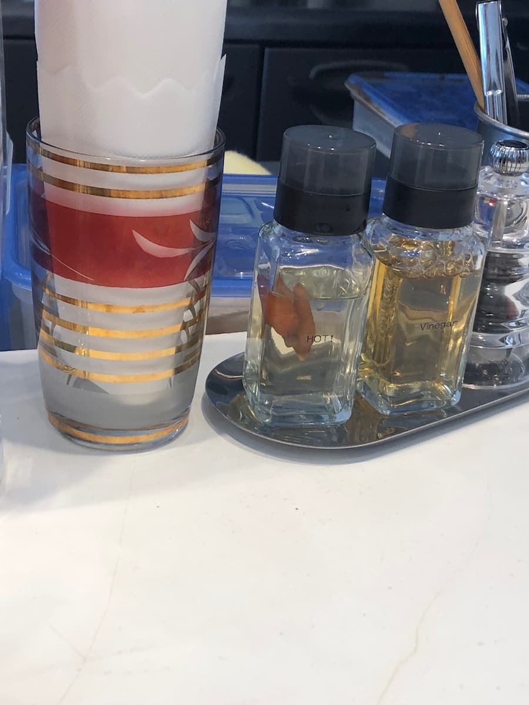

本篇文章是用AI（Chat GPT 4o）製作，我再部分加筆而成😁
這次造訪了位於那霸市大道的「沖縄そば SOBA DAY」。2024年10月吃的😁店面外觀簡單，以白色為基調的看板很吸睛呢✨。


一進店內，售票機就映入眼簾🎟。這裡似乎是餐券制，菜單也很豐富。這次我選的是「雙肉麵」！是可以同時享受三層肉和叉燒的奢華一碗。買了餐券坐下後，吧台座位滿座，十分熱鬧。果然是人氣店呢😊。

這家店的店名是「沖縄そば SOBA DAY」，而「沖繩麵之日」正是10月17日😄
因為我是在接近沖繩麵之日的時期來吃的，活動中還有叫做「鳳梨豬」的豬肉菜單。這次我點了一般菜單的「雙肉麵」，不過聽說之前的湯頭已經升級成用「鳳梨豬」熬的湯了，讓人期待呢😆


等了幾分鐘後端上來的「雙肉麵」。外觀是非常漂亮的一碗，配料也色彩豐富。放有叉燒、三層肉，還有麩？這個麩有點出乎意料，鬆軟的口感很有特色。味道本身幾乎感覺不到。
雖然說湯使用了鳳梨豬，不過湯頭是柴魚高湯很紮實🍜。

麵條是中細的直麵，口感稍微有嚼勁。整體雖然取得了平衡，但要說有沒有值得特別一提的特色，只能說很普通。
至於肉，三層肉和叉燒都是還留有一點筋感（口感偏韌）的類型。這可能會因人喜好而分歧呢😅。雖然有好好燉煮，但在軟嫩程度上還差一步吧。
店內氣氛休閒，充滿當地客人的熱鬧景象。只有吧台座位的小巧設計，一個人也能輕鬆造訪，是令人開心的點。另外調味料備有島辣椒和醋，可以依自己喜好調整，也很棒呢🌶️。

順帶一提，Google了一下，「SOBA DAY」似乎是由過去在我於「希望大家都能吃一次的推薦沖繩麵店」中介紹的「EIBUN」學藝過的人所經營。期待值升高了，但實際的味道印象是普通的好吃。當然，是穩定的一碗。
評分（9分/15分）：整體是普通好吃的沖繩麵。希望再有一點驚喜。觀光來的時候順道來一次或許不錯，但會不會回訪可能因人喜好而異？下次也想挑戰其他菜單🍴！
麵：★★★☆☆（3）
湯頭：★★★☆☆（3）
配料：★★★☆☆（3）